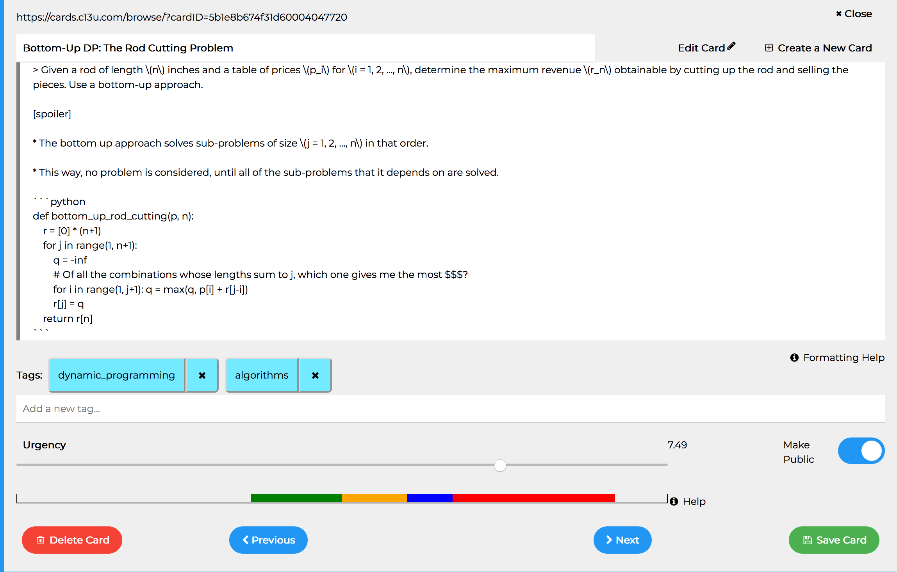
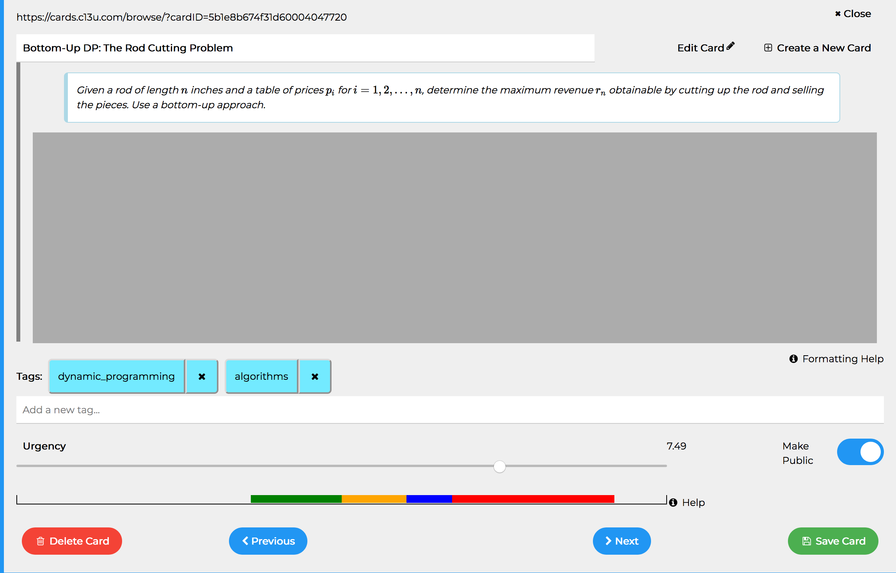
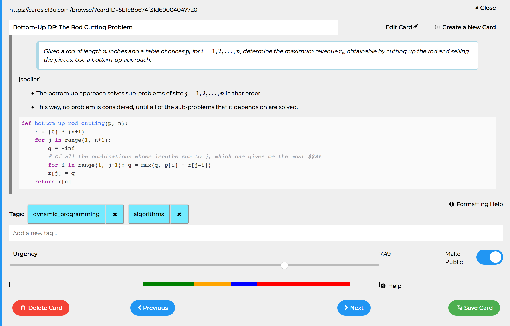

We will use this card to illustrate most of the editing features.

On saving the card, it will be displayed like this:

The gray box was created by including a [spoiler] line anywhere in the card. The gray box will cover anything below the first [spoiler] line. To show what's underneath, the gray box, hover over it or click on it:

Features of the Card Editor
- The card's body supports Markdown.
- If you're new to Markdown, here's a handy cheatsheet.
- models/SanitizationAndValidation.js
- The card's body supports LaTeX.
- If you're new to LaTeX, the LaTeX Wikibook and ShareLaTeX docs are good tutorials.
- views/partials/syntax_highlighting_and_latex.ejs
- When editing the card's body, pressing
Tabadds 4 spaces.- views/pages/home.ejs
- Deleted a card by mistake? No worries, we provide an opportunity for you to undo that deletion!
- models/CardsMongoDB.js
- When adding tags, we suggest (possibly) relevant tags.
- public/src/Autocomplete.js